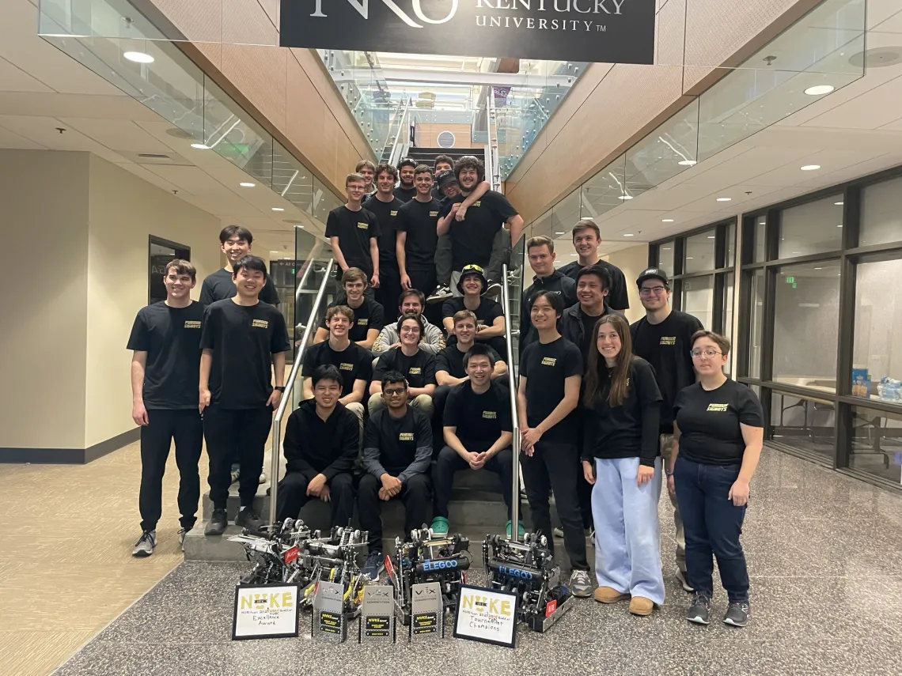
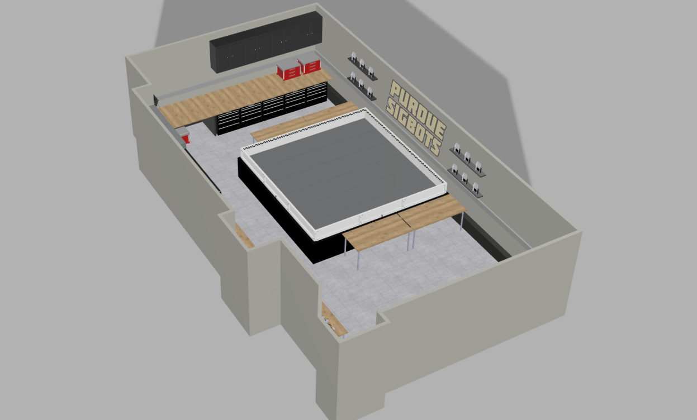
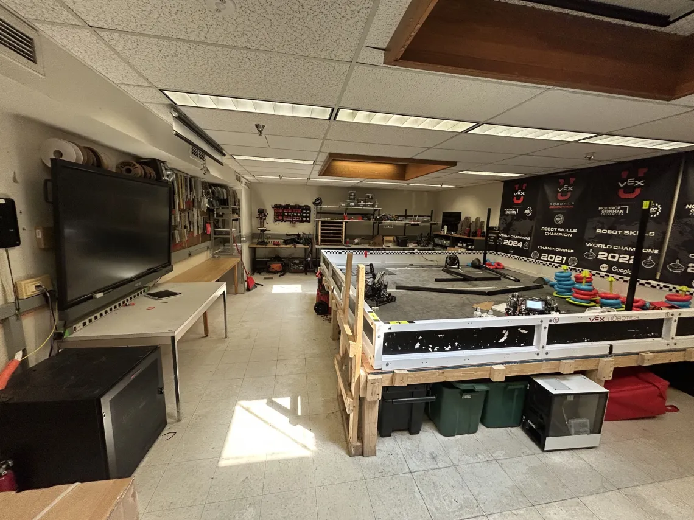
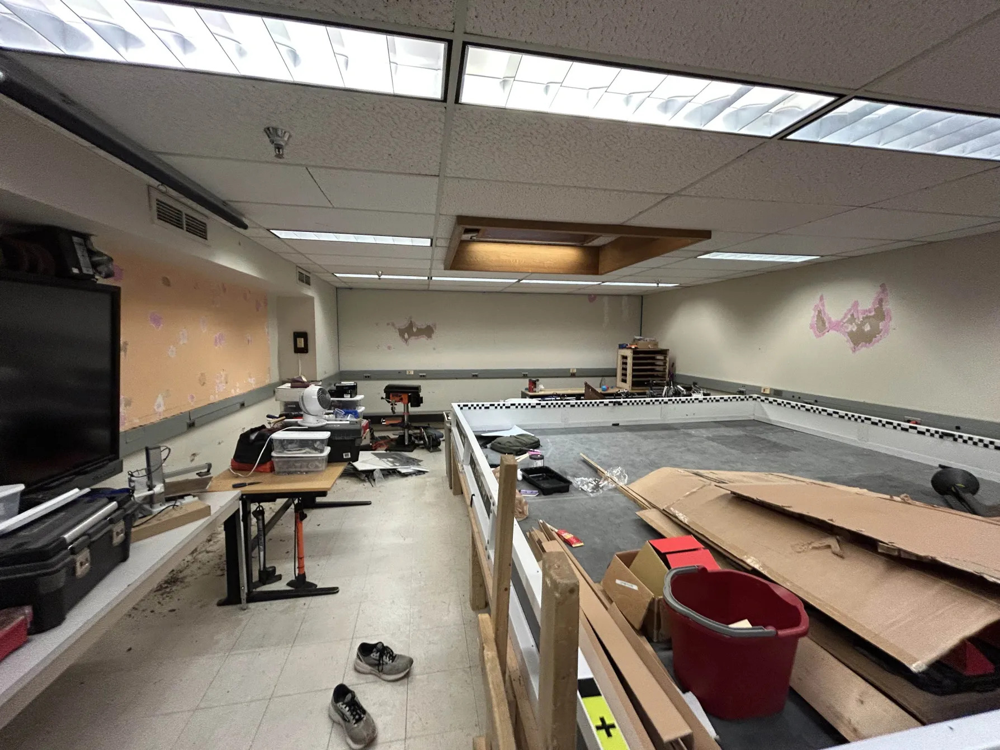
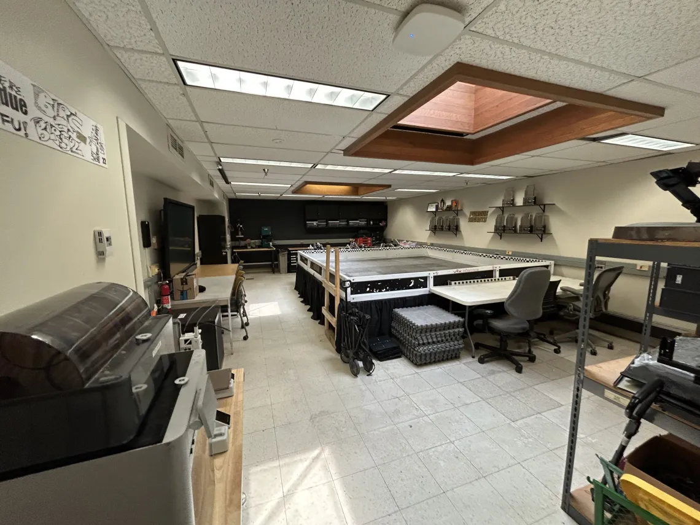
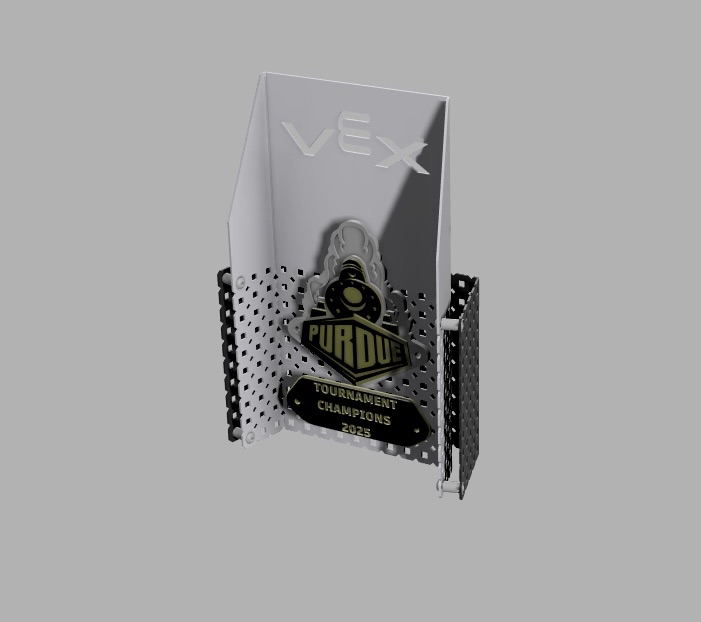
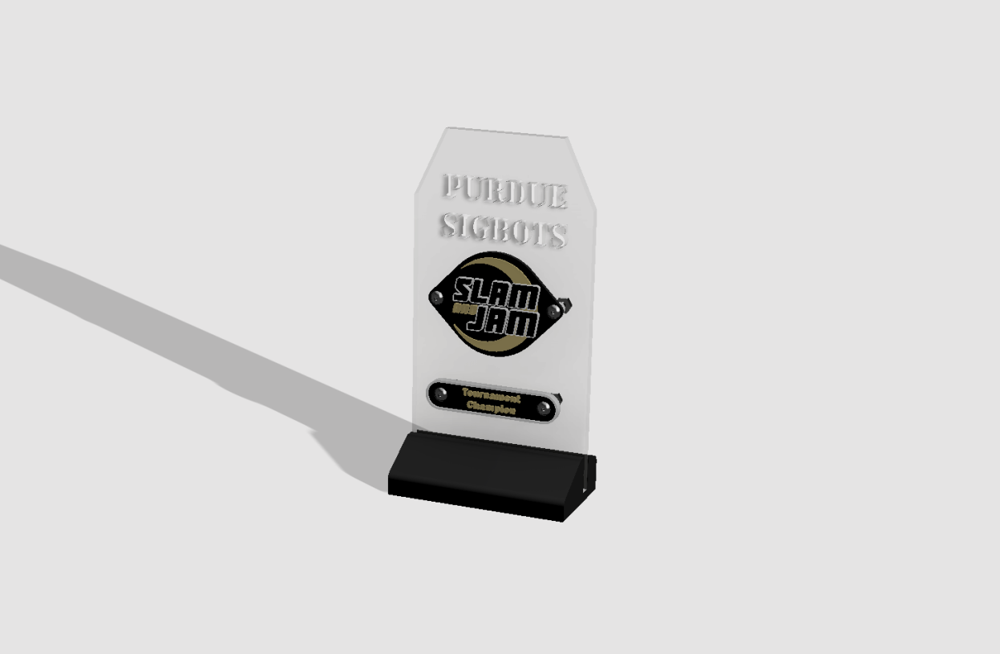
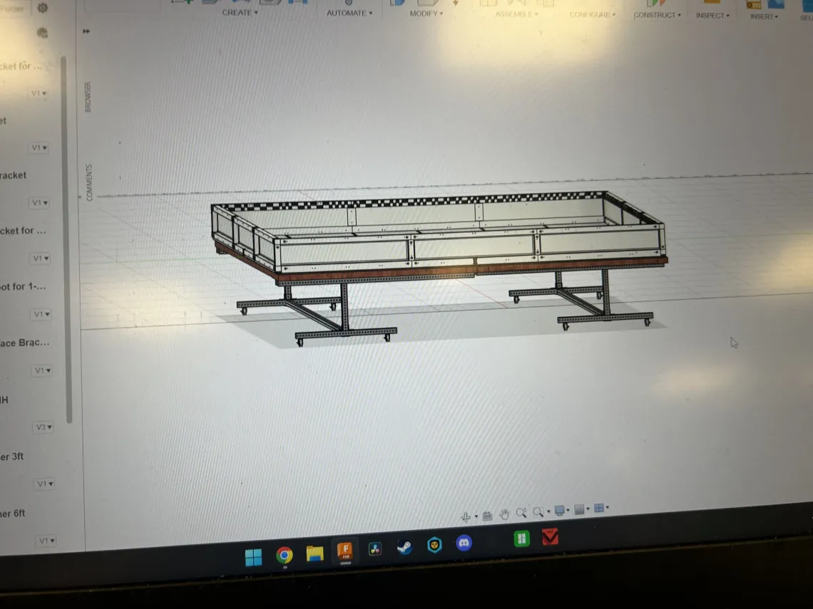
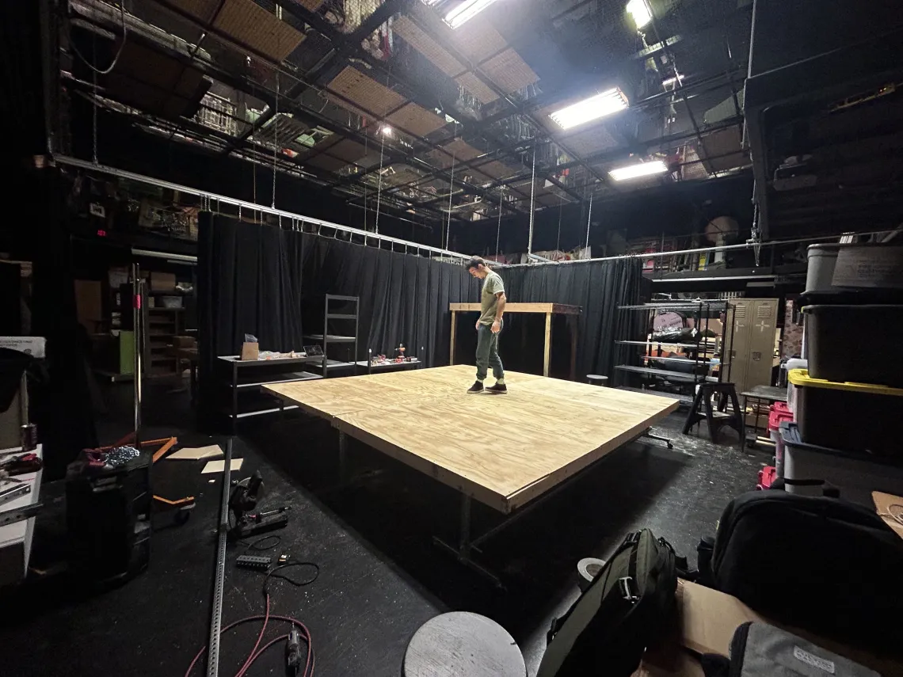
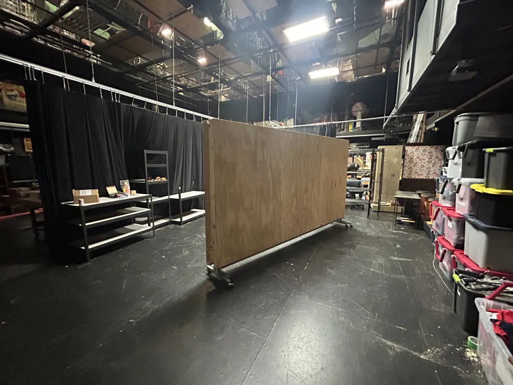

Sheet 05 · Purdue SigBots · ACM
Running the Programme
Vice President of ACM and mechanics lead for a 60+ member interdisciplinary robotics team with a $40,000 budget. The parts of engineering that are not engineering: money, space, people, and the hardware an event needs to run.
- Organisation
- ACM at Purdue: SigBots
- Role
- Vice President ·
Mechanics lead - Team size
- 60+ members
- Budget
- ~$40,000
- Responsibilities
- Finance · structure ·
manufacturing · recruiting - Facilities
- Lab renovation,
Haas Hall basement - Events
- 2–3 hosted per year
- Status
- Active
01The team
Purdue SigBots is a 60+ member interdisciplinary competitive robotics team. Beyond its competition record it maintains public resources the wider community runs on: the VEX Wiki and PROS, an open-source operating system for VEX hardware. We sit under ACM.
As Vice President of ACM and mechanics lead I own organisational structure, finances and manufacturing, and I lead mechanical design for the 24″ BLRS2 robot in Inventor. Practically that means managing a $40,000 budget, securing industry sponsorship, and building the recruit workshop structure that takes 30 or so new members a year from nothing to useful in CAD, manufacturing and documentation.
The workshops are the highest-leverage thing I do. A team this size only stays good if the pipeline works, and the pipeline is a teaching problem, not a talent problem.

02Lab overhaul
SigBots has occupied the same basement space in Haas Hall for over fifteen years with no significant renovation. There was no storage system, the walls were corroded and mouldy, and we were out of room, which is a safety problem before it is an inconvenience.
I led the renovation: stripping out dead equipment, repairing and painting, and installing shelving, cupboards and large drawers so tooling and stock have homes. I planned it in Fusion 360 and budgeted it in Excel, then raised the money through sponsorship and donations rather than waiting on a line item that was never going to appear.




03Events as a revenue line
We host two to three high school competitions a year plus the largest VEX U event in the world outside of the World Championship. These fund a meaningful part of the programme, and they are the reason the team can afford the materials that make the robots competitive.
Part of my job as mechanics lead is designing and fabricating the trophies we award. It is a small thing that people photograph and take home, so it is worth doing properly.


04Portable field risers
Setting up and tearing down competition fields is the single largest labour cost of hosting an event, and world-qualifying events require the field to be raised two feet off the ground. A peer and I were commissioned to design a collapsible riser that halves setup time and is cheap enough to build in quantity.
- Requirement
- 600 mm (2 ft) raised field, competition legal
- Target
- Halve setup and teardown time
- Constraints
- Low cost per unit, scalable, stores flat
- Outcome
- Folding riser, in service at hosted events



This is the kind of problem I find genuinely satisfying: the requirement is unglamorous, the constraint is money and volunteer hours, and the win is measured in how quickly a gym full of tired people can go home.